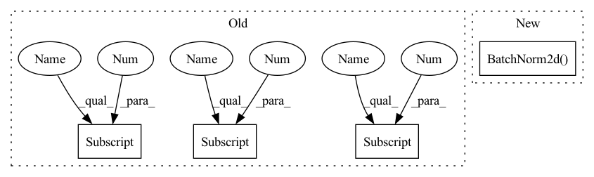

Pattern ID :592

Before Change
n = (depth - 2) / 9
nstages = [16, 64, 128, 256]
// one conv at the beginning (spatial size: 32x32)
self.conv1 = nn.Conv2d(3, nstages[0], kernel_size=3, stride=1,
padding=1, bias=False)
// use `block` as unit to construct res-net
// Stage 0 (spatial size: 32x32)
self.layer1 = self._make_layer(block, nstages[0], nstages[1], n)
// Stage 1 (spatial size: 32x32)
self.layer2 = self._make_layer(block, nstages[1], nstages[2], n, stride=2)
// Stage 2 (spatial size: 16x16)
self.layer3 = self._make_layer(block, nstages[2], nstages[3], n, stride=2)
// Stage 3 (spatial size: 8x8)
self.bn = nn.BatchNorm2d(nstages[3])
self.relu = nn.ReLU(inplace=True)
// classifier
self.avgpool = nn.AvgPool2d(8)
After Change
super(ResNet_Cifar, self).__init__()
self.inplanes = 16
self.conv1 = nn.Conv2d(3, 16, kernel_size=3, stride=1, padding=1, bias=False)
self.bn1 = nn.BatchNorm2d(16)
self.relu = nn.ReLU(inplace=True)
self.layer1 = self._make_layer(block, 16, layers[0])
self.layer2 = self._make_layer(block, 32, layers[1], stride=2)
self.layer3 = self._make_layer(block, 64, layers[2], stride=2)
In pattern: SUPERPATTERN
Frequency: 3
Non-data size: 4
Instances
Fragment ID: 2125857
Project Name: decile-team/cords
Commit Name: 798af04c991257c652c388af7a1fc4964c7f4f6a
Time: 2021-02-08
Author: krishnateja.killamsetty@utdallas.edu
File Name: cords/utils/models/resnet164.py
Class Name: ResNet
Method Name: __init__
Parent Class: nn.Module
Fragment ID: 2125859
Project Name: decile-team/cords
Commit Name: 798af04c991257c652c388af7a1fc4964c7f4f6a
Time: 2021-02-08
Author: krishnateja.killamsetty@utdallas.edu
File Name: cords/utils/models/resnet164.py
Class Name: ResNet
Method Name: __init__
Parent Class: nn.Module
Fragment ID: 2125833
Project Name: vlsomers/bpbreid
Commit Name: 710b9ac1a28d418bddc41aeeda320ab4de4d17fe
Time: 2018-10-26
Author: k.zhou@qmul.ac.uk
File Name: torchreid/models/resnet.py
Class Name: ResNet50M
Method Name: __init__
Parent Class: nn.Module
Fragment ID: 2125886
Project Name: datawhalechina/dive-into-cv-pytorch
Commit Name: d7e5c8335c2babf3ca45d2327bc74c2194b0dc59
Time: 2020-05-21
Author: qiangzibro@gmail.com
File Name: beginner/chapter02_image_classification_introduction/2.2_introduction_of_image_classification/2.2.2_classical_cnn_models/GoogLeNet/GoogLeNet.py
Class Name: Inception
Method Name: __init__
Parent Class: nn.Module